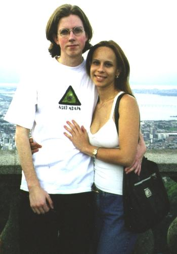

|
Travis Nelson |

From the left: Peel and Deelya
Hi. I'm Travis. I play Peel. I was first introduced to online gaming with Neverwinter Nights, an America Online game based on the AD&D gold box series. Taking to it like a natural, I soon joined one of the newer, smaller and more loudly arrogant guilds in the game. We grew in size quickly and after a major reorganization I came out as one of the four controlling warlords. Right about then I was kicked off AOL for hacking Neverwinter Nights. Bah. Last time I checked, the guild (ITB) was the biggest and most powerful guild there.
NWN influences a lot of my attitude concerning muds. It was a pk game, almost entirely and to this day I still yearn for it. You didn't kill for money or eq or experience, you killed merely to taunt your opponents. Undoubtably this is were the sheer arrogance and bravado that would later emerge with Peel developed. Ahh, those were the days, I look upon them fondly.
After my junior year of high school, I enrolled at a local junior college so I could take some programming classes. Sadly, they didn't have anything useful to teach me, but I did get to do a lot of tutoring which was fun. While there, I got my first taste of the internet. Mudding was strictly against the rules, you could (and people did) get banned from the college for mudding. So, naturally, I mudded. I started on Tsunami, but got bored with it before too long. In my search for something a little more interesting (using gopher no less :)), I stumbled on Sneezy. I'm not sure exactly when this was, but I do recall participating in the kobold invasion with Gilgamesh, which I'm told was in 3.0. So there you have it.
My primary character was a warrior named Mal. Mudding at school, however, was dangerous and I didn't have as much time to mud as I would have liked. Not until 4.1 did I finally get anything resembling normal internet access (live out in the woods, to this day there is only one ISP out here). After failing miserably with a mage, I remade as a monk and ganged up with Octavian (also a monk) and we basically rocked. Before long I was kicking azz with the best of them. By the end of 4.1, I was the greatest monk ever. ROAR.
During 4.5 beta I got bored of sitting around 1s of the inn, while people laughed at me because I was level 1. "This just won't do" I, thought to myself. I asked to immort. The admin staff deliberated for some time (about a month?) and then one friday I was made level 51. A few days later I was made level 58.
In RL I'm a computer scientist. I decided to be a computer scientist around the age of 9, although it was toss up between that and race car driver. I sort of go to school on and off, whenever I can afford it and think that I can handle the mental anguish of dealing with an institution that is designed to determine who is capable of performing hours upon hours of mindless labor to produce results that may or may not be correct or even applicable to any situation and will be disgarded anyway in order to get the approval of an older, dying generation, a generation that brought us nuclear waste, acid rain, extinction of entire races, gasoline powered automobiles which are frusteratingly inefficient but produce tidy profits for oil companies, pro-lifers that eat meat and kill doctors who perform abortions, religious zealots who promise you eternal damnation if you do not join THEIR particular clique, the philosophy that less guns means less crime, the idea that sex is a sin, an entire industry (tobacco) that thrives on selling carcinogenic poisons to children which we tolerate because it turns a profit; a generation that wonders why children pick up guns and go on killing sprees; that only approve of those who are wealthy enough to afford school and have nothing better to do than waste time for a few years in order to learn the ideals that allow them to survive in a culture dependent on the ability of the rich to sell to the poor what they do not need and can't afford anyway; a culture that has no use nor want of anything that does not either produce a profit or destroy other human beings in some manner; an entire country of sadists, masochists and hate-mongers conquered with the slaughter of native americans, founded with the violent bloody revolt of our mother country and ruled with the iron fists of corruption and greed.
*cough*